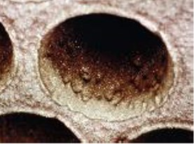
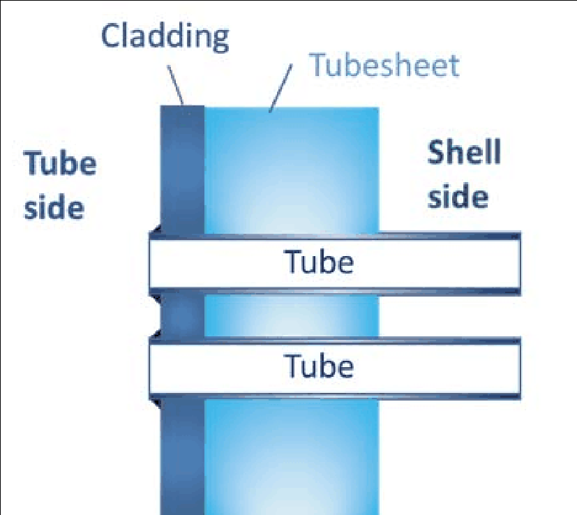
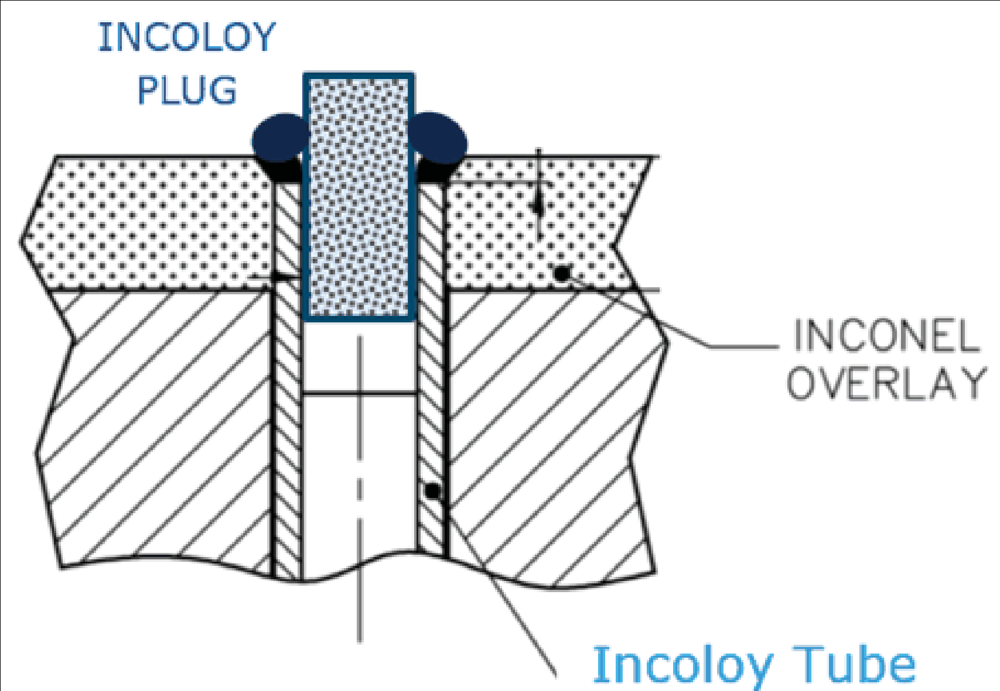
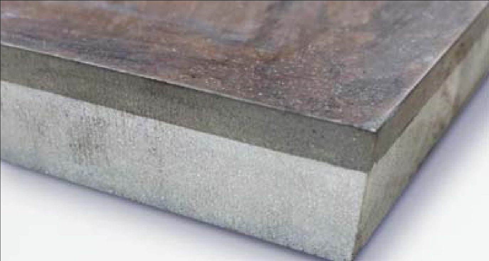

Cladding Applications in Shell and Tube Heat Exchangers
A thin layer of the right alloy can do the work of a solid high-alloy component. Where cladding pays off in heat exchangers, how it is made, and the details that decide whether it lasts.
Weld overlay and cladding are widely used to add a protective metallic layer to a base material. The cladding material has better properties for the service, mainly corrosion resistance, while a less costly substrate provides the strength to carry the loads, the required thermal conductivity and good fabricability. This is a cost-effective alternative to making the whole component from a high alloy. This article covers the main aspects of applying cladding correctly: design, fabrication, inspection and in-service considerations.
Advantages of cladding
Corrosion resistance
Cladding addresses corrosion directly by adding a layer of highly corrosion-resistant material, avoiding the need to upgrade the full thickness, whether for cost or fabricability reasons.
Erosion resistance
In some situations localized erosion is a major concern, for example at the tube entrance, especially under flow-accelerated corrosion (FAC). FAC is metal loss in carbon steel equipment when the normally protective magnetite (Fe3O4) layer dissolves into a flowing stream of water or water and steam. Cladding the tubesheet and fitting insert ferrules at the tube entrances can mitigate FAC and erosion at these critical locations.

Avoiding dissimilar welds between tubes and tubesheet
Where the tube material differs from the tubesheet material, dissimilar welds can be a concern. Cladding the tubesheet with a material matching the tubes avoids the problems of dissimilar welds, including thermal stresses, galvanic corrosion and quality assurance difficulties during welding.

Avoiding PWHT when plugging tubes in service
For tubesheets made of materials that require PWHT, such as Cr-Mo steels, plug welds made after in-service degradation should also be post-weld heat treated. This is difficult because of the large heat sink of a thick tubesheet and the susceptibility of the tubesheet ligaments to high thermal stresses. With a cladding layer on the tube-side face of the tubesheet, plugs can be welded to the cladding, in a plug material matching the cladding, and no PWHT is needed.

Resistance to hydrogen diffusion
In hydrogen service, cladding reduces hydrogen diffusion into and out of the base material. It does not eliminate diffusion, but it is an effective mitigation. Because hydrogen diffuses slowly through stainless cladding and similar corrosion-resistant overlays, the effective hydrogen pressure at the cladding-to-base-metal interface (the bond line) is lower than in the process stream. The steel beneath the cladding can therefore see a much lower effective hydrogen partial pressure.
Resistance to nitriding
Nitriding is the formation of a hard, brittle surface layer on some alloys exposed to high-temperature process streams containing high levels of nitrogen compounds such as ammonia or cyanides, particularly under reducing conditions. Nickel alloy cladding is used successfully to protect against nitriding. One example is the weld overlay on the shell side of the effluent cooler in the synthesis loop of ammonia plants, which resists both nitriding and hydrogen embrittlement.
Cladding methods
Several techniques are used to apply cladding. The three most common are:
Hot roll bonding
The steel mill heats the steel and the corrosion-resistant alloy together and rolls them as one package; the high temperature and pressure bond the two metals. A roll-bonded clad plate is generally accepted to have the lowest bond shear strength of the three methods. It is the main production method for stainless-clad steel plate, accounting for more than 90% of clad plate production worldwide.

Explosion bonding
Explosion bonding uses the very short, high-energy impulse of an explosion to drive two metal surfaces together, cleaning away surface oxide films and creating a metallic bond at the same time. It resists the most aggressive hydrogen charging conditions.
Weld overlay
Weld overlay is fusion deposition of a corrosion-resistant alloy onto a carbon or alloy steel substrate. It is usually done after the pressure vessel has been through many fabrication steps, though not always. Dilution often requires buttering passes and over-alloying to achieve the required composition at the surface.
Special care in hydrogen service
Clad disbonding tests should be performed for any 1¼Cr-½Mo and 1Cr-½Mo vessel in high-pressure hydrogen service that may be cooled down rapidly from service. Vessels that have experienced disbonding had been through a rapid shutdown, which does not allow the hydrogen to diffuse out before the metal reaches ambient temperature. Hydrogen disbonding tests on the proposed overlay welding procedures should be done to ASTM G146, at test conditions defined by the purchaser.
Bimetallic (duplex) tubing
Bimetallic tubing consists of two concentric tubes of different materials, for services that need different corrosion resistance on the shell and tube sides. One example is the bimetallic tubes in urea strippers, with an outer stainless steel tube and an inner zirconium tube to resist highly corrosive carbamate. Another is Omega Bond™ urea stripper tubes, made of an inner zirconium tube and an outer titanium tube.
Cladding thickness
In general, design codes and company specifications do not allow the clad thickness to be counted as pressure-resisting thickness; it is treated only as corrosion allowance. For weld overlay, the thickness must give an acceptable depth of the required chemical composition (1.5 mm per API 660), allowing for dilution at the interface with the base metal.
The cladding or overlay thickness on a tubesheet depends on the type of tube-to-tubesheet joint. When the tubes are only expanded, a thicker cladding is needed than when they are strength welded, to give enough length to expand the tube into the cladding and keep corrosive media away from the tubesheet base metal. Expansion grooves, where used, should be in the tubesheet base metal, not in the cladding.
| Location | API 660 | TEMA classes R and B (nominal) |
|---|---|---|
| Tube-side face, tubes expanded only | 10 mm | 7.8 mm |
| Tube-side face, tubes welded | 5 mm | 3.2 mm |
| Shell-side face | – | 9.5 mm |
In hydrogen service, the effective clad thickness needs special consideration: it should reduce the effective hydrogen partial pressure enough to eliminate the risk of high-temperature hydrogen attack on the base metal.
Repair and joint preparation of clad and overlaid steel
- Strip the cladding back at least 4.8 mm (3/16 in.) from the edge of the weld bevel.
- Round the cladding edge to a radius of at least 1.5 mm (1/16 in.), or taper it at an angle of at least 30°.
- For carbon and low-alloy steel backing, etch the stripped area with nitric acid or copper sulfate solution to confirm the cladding has been completely removed.
- Before back-cladding butt joints, take care not to cross-contaminate the cladding weld metal and the backing weld metal.
Conclusion
Cladding in shell and tube heat exchangers offers corrosion and erosion resistance, avoids dissimilar welds and PWHT of plug welds, and resists hydrogen diffusion and nitriding. It can be applied by hot roll bonding, explosion bonding or weld overlay. Hydrogen service needs special care, and bimetallic tubing serves applications that need different corrosion resistance on each side. The cladding must be thick enough to provide the required chemical composition and keep corrosive media away from the tubesheet base metal. Overall, cladding is a cost-effective way to improve the performance and life of shell and tube heat exchangers.
Standards referred to
- API Standard 660, Shell-and-Tube Heat Exchangers.
- TEMA, Standards of the Tubular Exchanger Manufacturers Association.
- ASTM G146, Standard Practice for Evaluation of Disbonding of Bimetallic Stainless Alloy/Steel Plate for Use in High-Pressure, High-Temperature Refinery Hydrogen Service.
This article is for general engineering guidance. Apply it with the current edition of the referenced codes and standards and the judgement of a qualified engineer.